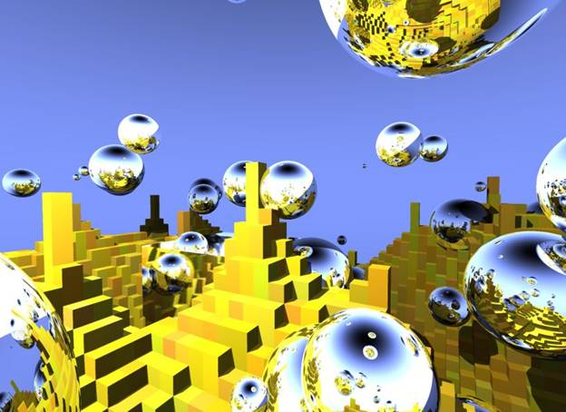
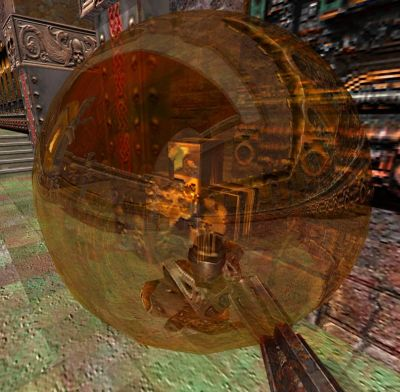
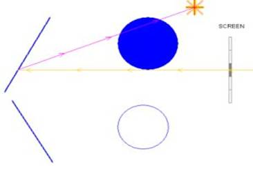
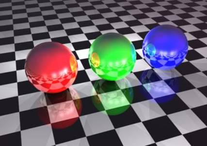

კომპიუტერული გრაფიკა
1 ლექცია
სხივების ტრასირების ალგორითმი
შესავალი და მოკლე მიმოხილვა

სხივების ტრასირების (სტ) ალგორითმი საშუალებას გვაძლევს შევქმნათ რეალისტური 3 განზომილებიანი გამოსახულებება. არსებობს ბევრი პოპულარული გრაფიკული პროგრამა რომელიც წარმატებით იყებებს ამ ალგორითმს რენდერის დროს. ასევე 3 განზომილებიანი მულტიპლიკაციური და ჩვეულებრივი ფილმებისთვის, მაღალი დონის ეფექტების შექმნისაც ხშირად გამოიყენება ამ ალგორითმზე დაფუძვნებული პაკეტები და პროგრამები. კომპიუტერის გამოთვლითი სიმძლავრის ზრდის პარალელურად მით უფრო პოპულარული ხდება სტ-ზე დაფუძვნებული პროგრამები. უკვე დაიწყეს ლაპარაკი ისეთ თამაშებზე და პროგრამებზე სადაც რეალურ დროში მოხდება სხივების ტრასირება. სულ რაღაც რამოდენიმე თვის წინ, პროგრამისტმა დანიელ პოლმა შეძლო პოპულარული თამაშის Quake III-ის გადატანა და სტ-ზე, ამისთვის გამოიყენა იყო 4 ბირთვიანი ინტელის პროცესორი, ეკრანის გარჩევადობა 768x768, კადრების გადახატვის სსიწრაფემ მიაღწია 90-ს ! მისი პროგრამით დაინტერესდა კომპანია ინტელი და დაიქირავა მომავალი თანამშრომობისთვის. ეს დიდი მიღწევაა თუ გავითვალისწინებთ რომ ჯერ არ არსებობს სხივების ტრასირების აპარატურული ამაჩქარებლები და ყველა გათვლების გაკეთება ცენტრალურ პროცესორს უწევს.
ეს არის კადრი ამ თამაშიდან. დაწვრილებით ინფორმაცია ამ პროექტზე შეგიძლიათ იხილოთ შემდეგ ვებ მისამართზე - http://www.q3rt.de/

დღესდღეობით პოპულარული გრაფიკული რენდერის ბიბილიოთეკები (OpenGL, DirectX) არიან რასტერიზაციაზე დაფუძვნებული. შეგახსენებთ რასტერიზაცია ესაა პროცესი რომლის დროსაც ხდება 3 განზომილებიანი ობიექტების გარდაქმნა/გაბრტყელება/გადაყვანა ეკრანის პიქსელებში(მეორენარად უწოდებენ ფრაგმენტებსაც).
ალგორითმის მოკლე აღწერა: ეკრანის ყოველი პიქსელისთვის ვუშვებთ სხივს, რომლისთვისაც მოწმდება კვეთავს თუ არა ეს სხივი სცენის რომელიმე ობიექტს. თუ მოხდა რამოდენიმე გადაკვეთა ავარჩევთ მათ შორის უმოკლესს. სცენის არჩეული ობიექტის მატერიალის მოცემულ წერტილში ნორმალის (შეგახსენებთ ნორმალი არის ერთეულოვანი ვექტორი რომელიც მიგვითითებს თუ საით ”იყურება” ზედაპირი), სინათლის წყარო(ები)ს მდებარეობის და ა.შ. გათვალისწინებით, ხდება შესაბამისი პიქსელის შეფერადების გამოთვლა. შეიძლება ობიექტი იყოს არეკვლადი ან ისეთ მატერიალი ჰქონდეს დანიშნული რომ დამატებითი სხივების გათვლა მოხდეს უფრო რეალისტური ნახატის მისაღებად. ალგორითმზე და მის რეალიზაციაზე უფრო დაწვრილებით ვისაუბრებთ მოგვიანებით.

სტ-ის ალგორითმის განხილვის და რეალიზაციის შემდეგ, შევისწავლით სხვადასხვა მეთოდებს რომელიც აასწაფებს ამ ალგორითმის გათვლას. ასევე არსებობს ე.წ. კლასიკური სტ-ის ალგორითმის გაუმჯობესებული ვერსია მონტე-კარლოს მეთოდი და ფოტონური გადამისამართებაც (Photon Mapping).
აღსანიშნავია რომ სტ ფიზიკურადად უფრო კორექტული მოდელია ვიდრე რასტერიზაცია, ოღონდ სტ-ის დროს გათვა ხდება პირიქით, ითვლება მხოლოდ ის სხივები რომლებიც თვალიდან (ამ შემთვევაში კომპიუტერის მონიტორიდან) მოდის. რეალობაში კი პირიქით ხდება. სინათლის წყაროდან წამოსული სხივები სხვდახვანაერი არეკვლის და აქეთ-იქით ”ხტუნაობის” შემედეგ ხვდება თვალში. სწორედ ამის გამო არის სტ-ის რეალიზაციისას ფოტორეალისტური ჩრდილების, არეკვლების და ა.შ. ეფექტების გათვლა ძალიან ადვილად და თითქმის ”უფასოდაც” კი ხდება. გვახსოვს რომ რასტერიზაციის შემთხვევაში იგივე ჩრდილის ან ანარეკლის მისაღებად საკმაოდ რთული მეთოდების და მიდგომების გამოყენება გვიწევდა, რომელიც რა თქმა უნდა მძიმედ აისახებოდა წარმადობაზეც. სტ-ს უფრო არ უჭირს გეომეტრიულად რთული სცენების რენდერი, ვიდრე ეს რასტერიზაციისას ხდება. მაგალითისთვის სცენის დაახლოებით 100-ჯერ გართულებისას რასტერიზაციის შემთხვევაში 100-ჯერ მეტი გათვლა მოგვიწევდა, სტ-ს გმაოყენბით კი 2-მხოლოდ 3-ჯერ მეტის. ასევე სტ იდეალურია პარალელული დაპროგრამებისთვის. პროცესორების რაოდენობის ზრდასთან ერთად გათვლის სისწრაფე შესაბამისად იზრდება 2-ზე 2-ჯერ, 4-ზე 4-ჯერ და ა.შ.
სტ-ს ალგორითმს, რა თქმა უნდა, მინუსებიც აქვს. დღესდღეობით შესაბამისი გრაფიკული ამაჩქარებლის არ ქონის გამო და მთელი სამუშაოს შესრულება უწევს ცენტრალურ პროცესორს. სტ-ს წარმადობა დამოკიდებულია ეკრანის გარჩევადობაზე. ლოგიკურია რომ რაც მეტია ეკრანის გარჩევადობა მით მეტი სხივების გათვლა გვიწევს და წარმადობაც შესაბამისია.
ბოლო დროის შენინიშნება შემდენი ტენდენციები: ცენტრალური პროცესორების რაოდენებს და სიმძლავრის ზრდა, მსხვილი კოპანიების დაინტერესება (მაგალითად ინტელი, რომელიც პროცესორების გარდა კომპილატორებს და ბევრ საინტერესო და ხარისხიან ბიბლიოთეკებსაც აწარმოებს) სტ-თი, უფრო მეტი პროგრამების მიერ რეალურ დროში დარენდერებული ფოტორეალისრული სცენები და თამაშები, გვაძლევს საფუძველს დავასკვნათ, რომ სწორედ სხივების ტრასირება და მასზე დაფუძნებული ან მისგან წარმოებულ ალგორითმებზე დაფუძნებული რენდერერები და ბიბლიოთეკები (შესაბამისი აპარატურული ამაჩქარებლების მხადაჭერით) გახდება კომპიუტერული და სხვა გრაფიკის მომავალი.
